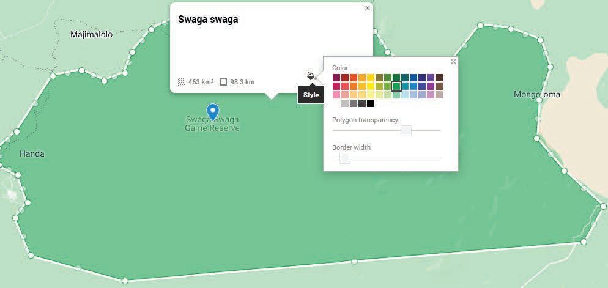

Figure 12: A Complete outline of the map of Swaga Swaga Game Reserve
7. You can change the title to match the content of the map. For example, use “Map of Swaga Swaga Game Reserve.” Go to the window on the left side of the map, select “Untitled Map,” then write “Swaga Swaga Map” in the box labelled “Map Title” and click the “Save” button.
8. Change the appearance of your map by using different available colours. Click the left mouse button inside Swaga Swaga Game Reserve, then click the “Style” button and choose your favourite colour, for example the green colour, as presented in Figure 13.

Figure 13: Changing the colour on the map